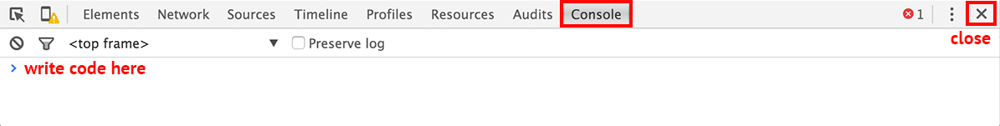
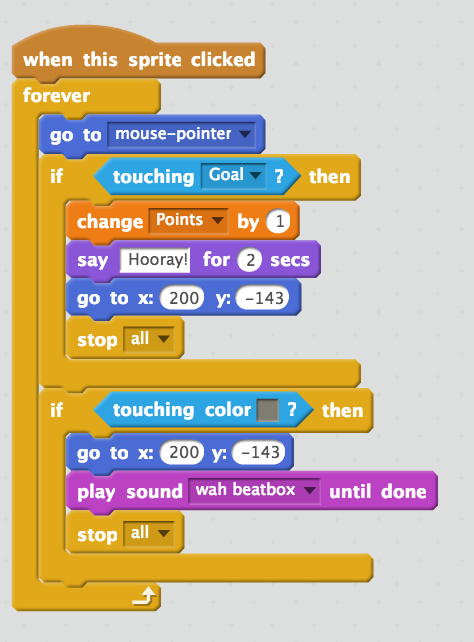

Intro to JavaScript & jQuery
Introduction to Computer Programming
Up until now we have been working with HTML5 and CSS3. Both of these are coding languages but they’re not considered programming languages per se. They are presentation-oriented languages and what makes them different than programming languages is that they cannot solve the problems that programming languages can. By contrast, all programming languages can write all programs. What that means is that what programming language A can solve, so can B. That doesn’t mean they’re the same. They could be very different in syntax (the symbols used in each language). But they can solve the same problems and both will share the same computational theories. This is why once you understand the basics of one programming language, you’re likely to more easily pick up another.
In web development we use several programming languages. For example, PHP, Ruby, Python and JavaScript. JavaScript is the language we will be learning today because it’s a language closely associated with HTML & CSS in that it can be executed in the browser. It’s considered a front-end and a back-end language. The other programming languages mentioned do not run in the browser and they are considered back-end languages.
While HTML & CSS determine the presentation of content on a website, JavaScript will determine the functionality and interactions of a website. Before we sink our teeth into JavaScript proper, we will learn some basics of computational thinking using a syntax-less language called Scratch.
Computational Thinking with Scratch
Simply put, when we write a computer program, we give instructions to our computer to carry out a set of instructions that will help us solve a problem. And while it may seem somewhat intimidating when we look at the syntax of a programming language like JavaScript, you need to always keep in mind that the computer is not smart. You are. Computers are just very fast at performing the tasks we tell them to perform.
The first thing you need to become a great programmer, is to think like a computer. That means breaking solutions down into clear simple steps that a computer can perform.
If you were asking a human to walk from point A to point B you might say:
“Please walk over to point B”
If you were to ask a robot to do the same thing you might need to be more clear and break things down in a way it will understand:
Robot, please do the following:
- Bring your right leg forward 50cm.
- Bring your left leg forward 50cm past the right leg.
- Bring your right leg forward 50cm past the left leg.
- Repeat 2 and 3 until you reach Point B, then stop.
We’re going to learn about some of the basic components of programming languages creating a simple game with Scratch:
Take a look at the demo of our game here:
Class Discussion:
Computer games are usually made up of players, goals and rules.
In your own english words, describe all the instructions we might need to give the computer to make this game work. In other words, what are the players, goals and rules of this game? How would you communicate the goals and rules to the computer?
Programming with Scratch
- Go to this URL for our starter project and click on the orange “remix” button on the upper right hand corner of the screen.
- The interface that you’re on is Scratch. On the left hand side we have the game area where you should now see a planet, a rocket and steroid filled space background. In the middle you will see a bunch of colourful blocks. These are instructions you can give to the computer. In other words, these are little bits of code we can use to program our game.
- To give an instruction to an object, select it from the Sprites section on the bottom left hand side of the screen (right below the game), and then drag any blocks you want to use, to the right hand side.
- We will code the game together.
Code-Along: Let’s create our own game.
Using blocks:
- Make the rocket follow the mouse, when it’s clicked.
- Make the rocket say “Hooray” if it touches the planet and then go back to its starting position.
- Make the rocket play a losing sound and return to its starting position when it touches an asteroid.
- Make the rocket return to its starting position when the green(start) flag is clicked.
- Create a Points variable and add 1 point each time the rocket touches the planet.
- Bonus: Add a winning sound each time the rocket reaches the planet.
Resources
Watch the Solution Video Walkthrough
Intro to JavaScript
In our Scratch game we used some of the more common parts of any programming language. These include: Data types like Strings and Numbers; variables; Loops, conditional statements, functions, events, and even methods.
JavaScript includes variables, functions, objects or control structures such as if statements or loops just like Scratch. More on each of these later…
What do we use JavaScript for?
JavaScript controls the behavior of your web page. It allows you to do things such as:
- animate items
- hide or show items
- react to user input (on scroll, on click)
- and even process data
Here’s what JavaScript looks like:
var myVariable = "Hello World";
function sayHello(){
alert(myVariable);
}
sayHello();
It might look intimidating with all the JavaScript syntax but it’s not much different from this set of instructions in Scratch:

Both, the JavaScript function and the set of Scratch blocks, are sets of instructions. The JavaScript function will make a box pop up with the words “Hello World” when the website loads.
Let’s try some JavaScript.
The Console
The console is a browser tool used to interact directly with a web page and is useful for testing small snippets of code or for debugging errors. You can type commands and test code directly in the console as well.
It can be accessed in the same area as when you’re inspecting elements except it’s under the Console tab. The console in Chrome looks like this:

Note the > symbol. It is used by the console to represent a space for you to enter your input. In Chrome, there are a couple ways to open the Console tab.
- keyboard shortcut: CMD + OPTION + J (MAC) / CTRL + SHIFT + J (WINDOWS)
- from the menu: View > Developer > JavaScript Console
Types: Numbers
JavaScript values can be one of several different data types. The most basic is a number.
JavaScript can also do math.
Use + for addition, - for subtraction, * for multiplication and / for division.
Let’s try out a couple math exercises in the console.
After the > symbol, try adding any two numbers together using the + symbol and press the enter/return key. The command gets evaluated and a value is returned back to you. You will see something like this:
> 30 + 30
< 60
The > symbol is used by the console to represent a space for your input.
The < symbol is used by the console to represent the returned value of your input.
Fun Fact: The order of operations is BEDMAS. Remember BEDMAS? (Brackets, Exponents, Division, Multiplication, Addition, Subtraction)
In Scratch, we used numbers in our Space game to count points, and to make the rocket go back to the starting coordinates on the x and y grid.
What do you think numbers and math can be used for in a website?
Types: Strings
When you store any amount of text, like words or sentences, the type is a string value and must be contained in quotes.
> "hello"
< "hello"
In our Scratch game we had the rocket say “Hooray!” when it reached its goal. “Hooray” was a string.
When do you think a string can be used with JavaScript?
Extra Resource
There are more data types. View here: Microsoft Developer Network Data Types (JavaScript).
Comments
There are two ways to write comments.
// Single line comment.
// Each line needs to include the two slashes.
/*
Multi-line comment.
Open and close the block
with the same syntax as
CSS comments!
*/
Intro to Functions
JavaScript generally executes one line at a time, from top to bottom.
Functions can be used to execute a repetitive set of instructions by grouping multiple commands into one name. There are functions built into the language and you can also create your own.
In Scratch we created our own set of instructions for when our rocket was clicked. That was a function that looked like this:

We also used built-in functions in Scratch like this:

Let's look at the alert() function in JavaScript.
Note the syntax for functions, the parentheses (), must be included.
Also, commands end with a semi-colon ; to indicate that the instruction is complete.
Go back to the console and type in
alert();, and see what happens!
Functions and Arguments
We've seen now that the alert() function creates a pop-up in the browser. But the pop-up is blank. Pass an argument into this function by adding a value within the parentheses ().
Note the use of quotes for string types.
Try this in the console:
alert("Hello!");Try using the function again but with a different argument.
Whatever value you put within the parentheses will get passed into the function. That way, you can re-use the function with different arguments.
Make your own functions
To create your own functions, use the keyword function and give it a name.
function nameOfFunction(){
// instructions go here
}
When you declare/create a function, it won’t execute until you call it.
// Declare a function
function myGreeting(){
alert("hello!");
}
// Call the function
myGreeting();
Extra resources
Variables
Variables are used to store values. Remember ?
It's like a box; put something in it to store and take it out when you're ready to use it.
Declare variables with the keyword var and a name of your choosing and assign a value. The name cannot contain spaces.
var myVariable = "Hello!";
| | |
keyword | value given to variable
|
variable name created by you
// Declare the variable
var favDay = "Saturday";
// Pass the value into the function
alert(favDay);
Try out the above example in the console. What do you think the alert message will be?
Objects
If variables are boxes, objects can be thought of as a box with multiple compartments, like a bento box!
A basic variable only holds one value.

/* declare the variable */
var box;
/* assign a value */
box = "Rice";
You can also declare and assign a variable and value in one line.
var box = "Rice";
An object holds a collection of values. Each value is a property of the object.
/* create a new object */
var bentobox = {};

/* assign the values using "dot notation" */
bentobox.main = "Teriyaki";
bentobox.side = "Tempura";
bentobox.salad = "Seaweed Salad";
bentobox.soup = "Miso";
bentobox.sauce = "Soya";
bentobox.dessert = "Fruit";
Enter the above in the console. And then type bentobox to see the object returned. You’ll see each of the object’s name:value pairs:
bentobox = {
main: "Teriyaki",
side: "Tempura",
salad: "Seaweed Salad",
soup: "Miso",
sauce: "Soya",
dessert: "Fruit" //Notice there's no comma on the last name:value pair.
}
(Almost) Everything in JS is an Object
Variables can also be treated as an object. Dot notation can be used to set the property value of an object but can also be used to get information from an object using functions.
When you apply a function to an object, it’s called a method.
For example, the length() method can be used to find the number of characters in a string.
var day = "Sunday";
alert(day.length);
You can even make the length command into a variable.
var day = "Sunday";
var numOfCharacters = day.length;
alert(numOfCharacters);
Extra resources:
Objects, Functions and Methods
What's the difference between these two?
The second one kind of looks like a function right?
alert();
console.log();
alert() is a function that works on its own.
log() is also a function but it is attached to the console object, using dot notation described in the previous section.
When a function is attached to an object, it’s referred to as a method. It will log a message into the console.
console.log() can be used to test and debug by outputting values in the browser console itself rather than using alert(). No more pesky pop-ups!
alert("hello!"); /* will show as a popup */
console.log("hi!"); /* will show in only the console */
Try passing an argument into both
alert();andconsole.log();in the console and see the difference.
Concatenation
When you store any amount of text, like words or sentences, the type is a string value and must be contained in quotes.
var myVariable = "Hello class!";
You can join strings together using the + symbol. This is called concatenation. You can join actual strings or strings contained in a variable.
var name = "Ladies Learning Code";
var greeting = "Hello " + name + "!";
Resources
Here are some resources to dig deeper in to pure JavaScript.
CSS vs JavaScript
With the introduction of new CSS3 properties, effects such as animating page elements previously created with Flash or JavaScript can now be achieved using pure CSS. So sometimes trying to figure out when to use CSS or JavaScript can be tricky.
Some guidelines:
If it can be accomplished with CSS, usually it’s better to go with CSS.
- keep in mind that HTML semantics and efficient & clean code comes first
- if it requires too many hacks or HTML/CSS that goes again best practices, creates accessibility or SEO issues, use JS!
If it’s a visual effect, that happens on page load, you might be able to use CSS
- CSS is executed as soon as the page loads
- new CSS3 property,
@keyframes, allows for timing delays but still not attached to user actions - if it requires user interaction (e.g. when user clicks, when user scrolls), then it’s usually JS
Extra Resources
- Getting Started with CSS3 Transitions and Animation
- Animate.css
- GreenSock is a popular JS-based animation library.
- ScrollMagic is a JS library that works with GSAP and is good for scrolling animations
- ihatetomatoes has excellent free beginner workshops on GreenSock
JavaScript vs jQuery
What is jQuery?
jQuery is JavaScript.
jQuery is a cross-browser JavaScript library used to simplify your program.
JavaScript example
document.getElementById("status")
jQuery example
$("#status")
Though it has its own syntax, it is still JavaScript at its core. Because of this, it’s important to have a base understanding of JavaScript principles to make sense of how jQuery works.
Functions & jQuery
A function is one of the most powerful tools in JavaScript and the one you’re learning about today is:
jQuery()
Looks like a function right?
Remember, jQuery is a JavaScript library and basically contains LOTS of prewritten functions/methods used to simplify your program.
In most cases, it’s conventional to use the jQuery shortcut, $.
jQuery() is the same as $().
This syntax will be used for the remainder of the lessons.
Using jQuery
How to select an HTML object/element
A common use for jQuery is selecting an HTML object and applying an effect or action to it. The $() function takes a single value: a string containing a selector that is similar to how items are selected in CSS.
To select all the paragraphs on the page, use p as the selector. It is contained in quotes because it is a string.
$("p");
To select a class name, use the leading period, just like CSS.
$(".about");
To select an id name, use the number/hash symbol, just like CSS.
$("#about");
What element will be selected in this example?
$(".about p");
Once you select an object, you can apply one of many jQuery effects using various methods. All the methods are documented here: http://api.jquery.com/
Many of these effects allow you to add parameters to change the speed of the effect (numbers are in milliseconds).
You can also chain them together to create multiple effects.
$(".box").fadeOut();
$(".box").fadeOut(2000);
$(".box").fadeOut(2000).fadeIn(500);
Let’s try it out on CodePen: http://codepen.io/learningcode/pen/pjQePw#0
Adding JavaScript/jQuery to your files
There are two ways to add JavaScript to a page.
Inline
Add a pair of <script></script> tags onto the HTML page to enclose the JavaScript code. JavaScript can be added anywhere on the page!
However, it’s often recommended to add the scripts to the bottom of the page, just before the closing </body> tag, to allow all the page content to load first.
<!DOCTYPE html>
<html lang="en">
<head>
<meta charset="UTF-8">
<title>Document</title>
</head>
<body>
<!-- a bunch of HTML here -->
<script>
// JavaScript here
</script>
</body>
</html>
You might see the type attribute included as well. This was required before HTML5 was introduced.
<script type="text/javascript">
// JavaScript here
</script>
jQuery vs JavaScript
Including pure JavaScript into your web page only requires the code to be written between the <script></script> tags.
<script>
// JavaScript code here
</script>
In jQuery, the document needs to be “ready” first.
<script>
$(document).ready(function(){
//jQuery code here
});
</script>
$(document).ready()
jQuery uses the ready() method to detect this state of readiness.
This is a bit of a complex idea and has a lot of syntax to get used to. Just know that it’s required to make the jQuery code work properly.
It only needs to be included once. Add all the jQuery code in between the curly brackets {}.
(In CodePen, you don’t have to add it because it’s already integrated into the tool.)
Extra resource: http://learn.jquery.com/using-jquery-core/document-ready/
External
Just like CSS, you can also write JavaScript/jQuery in a separate file using a .js file extension. Link to it using the same <script></script> tag pair but add the src attribute.
<script src="folder/file.js"></script>
<script src="js/global.js"></script>
jQuery vs JavaScript
In the external file, you do not need to add the <script> tags.
But to write jQuery specific code, the $( document ).ready() is still required.
Referencing jQuery’s library
Similar to Google Fonts or any third party tool, you have to reference the file to access all code required to make to make it work.
Option 1 - Download and include the files locally
Download the latest version of jQuery and save it within your projects files. It’s common to create a separate folder for JavaScript files for organization, just like the images and css folders.
Use the <script> tag to reference the file but in the src, link to where the file is saved in your project’s directory and the exact file name. Make sure to add it before your JavaScript file.
<script src="js/jquery-1.11.3.min.js"></script>
<script src="js/main.js"></script>
Option 2 - Use a CDN
CDNs can offer a performance benefit by hosting jQuery on servers spread across the globe. To use the jQuery CDN, reference the hosted file directly, listed on the Downloads page.
<script src="//code.jquery.com/jquery-1.11.3.min.js"></script>
<script src="js/main.js"></script>
Be sure to include the http:// when viewing the site locally (on your computer).
<script src="http://code.jquery.com/jquery-1.11.3.min.js"></script>
EXERCISE: Adding JS To Our Own Projects
We are going to add jQuery and our own JavaScript file to our projects. Feel free to use the sample project if you don’t want to add JS to your own project yet:
- Create a JS folder inside your project folder to keep your JavaScript files. This will include your own JS code, as well as any jQuery files and jQuery plugins. (we’ll learn more about plugins next class).
- Go to https://jquery.com/ and download the latest version of jQuery by clicking on the “Download jQuery” button and then selecting Download the compressed, production jQuery 3.1.1. Save your downloaded jQuery file into your new JS folder from step 1.
- Create your own js file and name it main.js
Add the jQuery script followed by your own script using
<script></script>tags to the end of your HTML file, right before the closing body tag.<script src="js/jquery-3.1.1.min.js"></script> <script src="js/main.js"></script>Be sure to add your
document.readyfunction to your main.js file. Reminder:$(document).ready(function(){ //jQuery code here });- Add a
console.log()oralert()function where it says//jQuery code hereabove. For examplealert('Hello World!');- Open up your HTML page where the scripts are linked and test to see if the alert or console.log worked. If they did, that means you’ve successfully added jQuery and JavaScript to your website!
Resources
jQuery Click Events
Often, JavaScript is used to handle events that require the user to click first, before something happens. Also, using a click event can control when the effects happen instead of being executed right away. Remember when we talked about “Events” in Scratch? This is exactly the same. Just like this little guy: 
Instead of the browser running the event right away, a click event is triggered only when a selected item is clicked by the user.
When would this effect be useful?
Syntax
$( "selector" ).click(function() {
// code to be executed on click
});
Let’s try this out in another CodePen example.
Next week we’ll use click events and objects in more depth with practical applications to our projects.
Resource
~ end ~